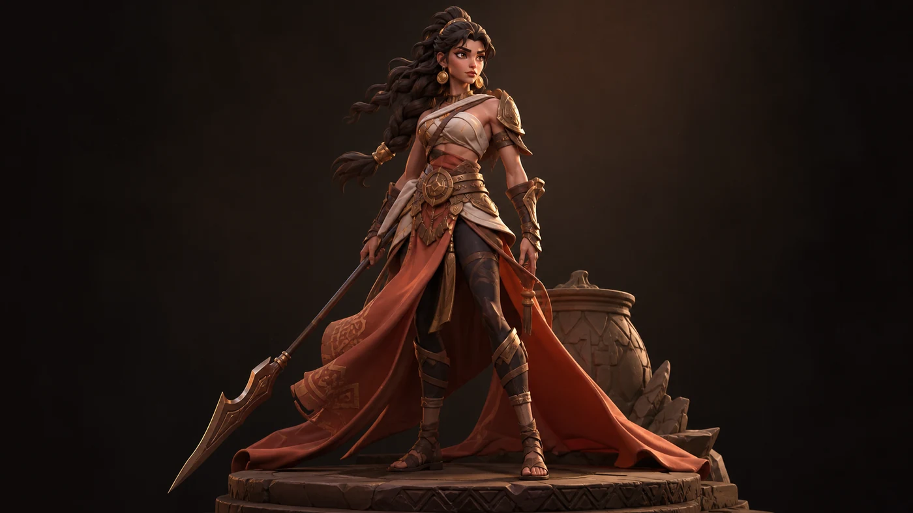
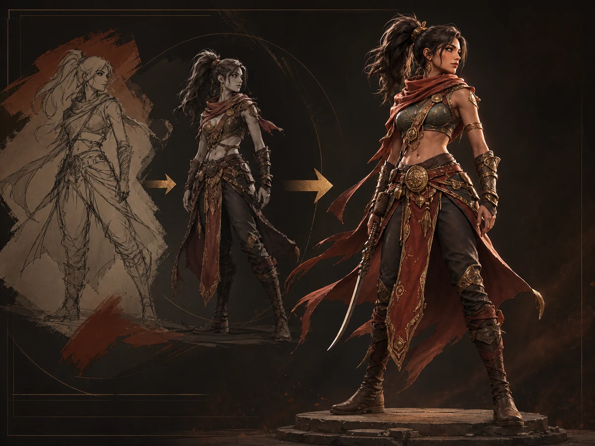
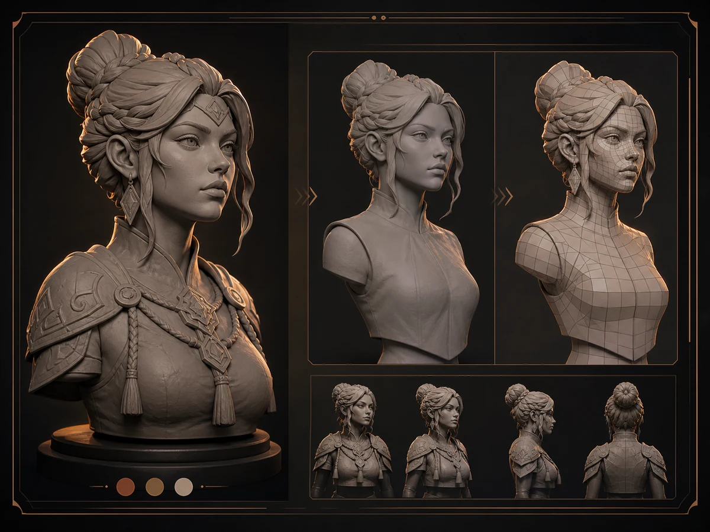
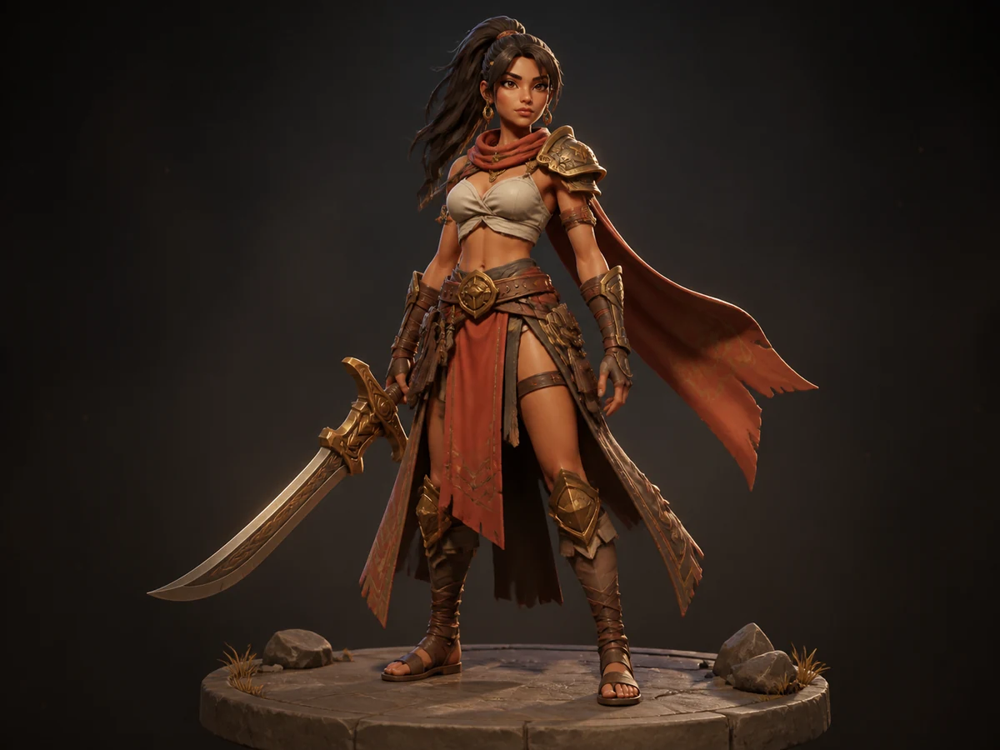
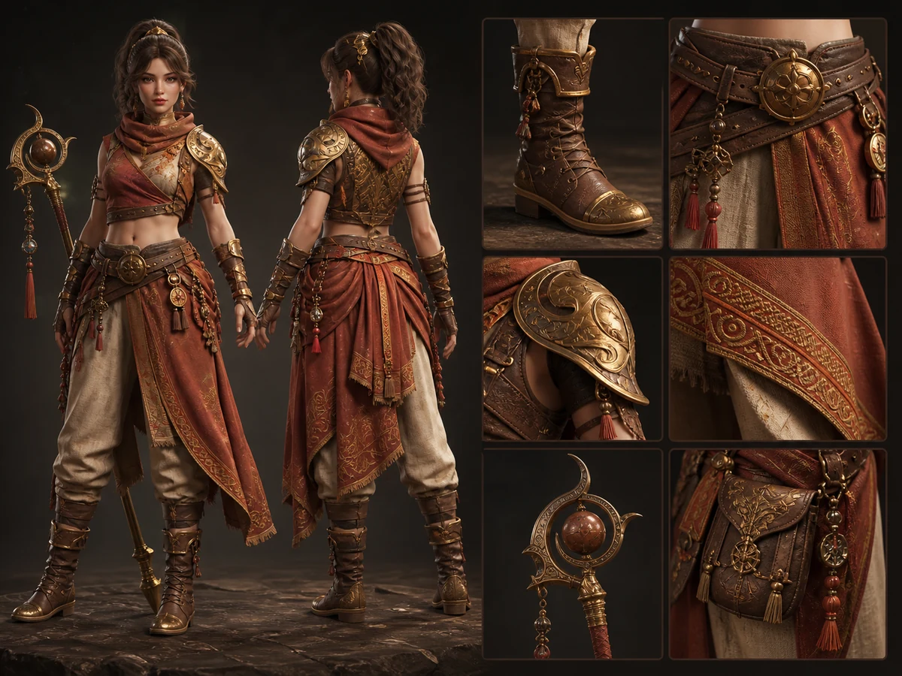

01
Starting Point
Reference directionThe concept set begins with a presentation board that establishes character mood, silhouette, palette, and intended portfolio tone.


Case study
A self-contained visual direction created for the V2 site so the portfolio can show character-art presentation without using research mockups or fake client work.
Launch status
What this is
This is an original visual set created for the V2 site to demonstrate character-art presentation direction. It does not prove source meshes, topology, UVs, texture maps, engine integration, delivered files, client approval, or shipped production results.
Goals
Process
The concept set begins with a presentation board that establishes character mood, silhouette, palette, and intended portfolio tone.
A tighter direction board translates the first visual idea into a more usable character-art presentation language.

The sculpt-style image gives the page a process rhythm, while staying labeled as an illustrative staging asset.

This stage is deliberately honest: the visual suggests the kind of technical evidence a senior portfolio needs, but it is not used as real wireframe, UV, or export proof.

The final render stage shows how a strong beauty image can anchor a work card, case-study hero, and recruiter scan.

The output for this case study is a set of optimized WebP images for the staging site, plus a documented replacement path for true production proof.

Outcome
v2/assets/portfolio/hero-original-v2-concept.webpv2/assets/portfolio/work-concept-to-3d.webpv2/assets/portfolio/work-game-ready-character.webpv2/assets/portfolio/work-sculpt-retopo.webpv2/assets/portfolio/work-avatar-character.webpv2/assets/portfolio/work-mascot-character.webpv2/assets/portfolio/work-outfits-accessories.webpv2/assets/process/original-v2-concept/*.webpv2/assets/profile/studio-process-portrait.webpNo client, shipped project, production metric, source 3D file, topology, UV layout, texture sheet, engine integration, or delivered commercial asset is claimed by this page.
Before this reads as senior production proof, replace the illustrative technical sections with real Lesly mesh, UV, texture, render, source-file, and handoff evidence.
More work
Original avatar concept board showing expression range and creator-facing presentation.

Original mascot concept board for startup, creator, and product-character positioning.

Original concept-to-render board showing how early direction can become a polished character presentation.